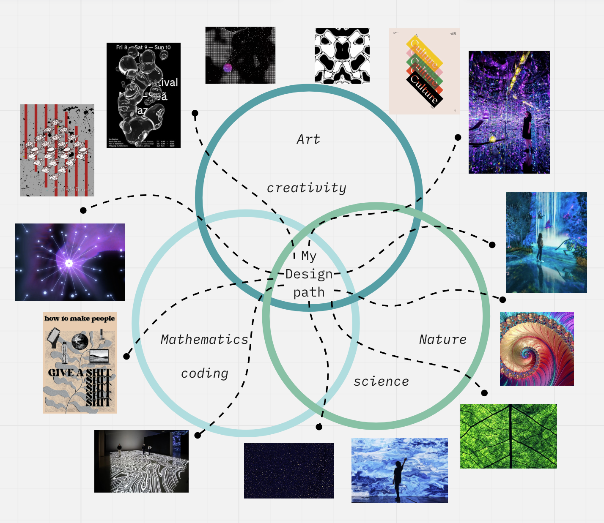

Output:
At the end of this trimester we expect you to update who you are and what makes you unique (identity) and your personal “vision” of your future as a professional. Create a specific post on your website.
My notes from the Future Talks January 10 – Audrey Desjardins
Our first guest speaker for the Future Talks series was Audrey Desjardins. Just by her name, something told me that she was probably from Quebec, and to my delight, I was right. In her talk she gave a wide overview of her work, mainly the thesis project where she converted a Mercedes Sprinter into a DIY camper van. The main topics she discussed were interaction design and auto-ethnographic research, which could be defined as conducting research from a first person perspective, through anecdotal evidence.
She pointed out the conflict we can come across when doing auto-ethnographic research: The borderd between being researcher, research subject and research experiment designer becomes grey. This was probably the most interesting insight to me, because it highlighted the conflicting roles that may emerge in the future when I would be engaging in first-person research or projects.
I have to say that I understand the value in designing with communities and in first person perspectives, however I do not see its value when conducting most types of research because it could quickly turn into personal experience rather than evidence.
January 24 – Laura Forlano
In her talk, Laura Forlano introduced herself as a “she/her, white, highly educated, isabled cyborg.” It was a very interesting and blunt introduction, which I liked. She highlighted her first-person research progress and insights into what it is like to be a T1 diabetic: through a pump, which is regulating her insulin levels, she is bound to a piece of technology she cannot actively design or debug. This is the reason why she considers herself a 'disabled cyborg' and stated “the AI system that is keeping me alive is also ruining my life.”
She went through the benefits of the device (keeping her alive) yet also the numerous cons to the technology (disrupting sleep, being anxious, monitoring the device, not having control over the design).
I like how this seminar complimented the previous Future Talk, and the knowledge she shared seemed more applicable and “useful” than the previous example. It was eye-opening to see how technology has the power to control, improve and worsen our lives all at once.
February 07 – Sergio Urueña
The presentation Sergio gave us was the most theoretical out of all the talks, and although many people brought up the lack of practice the content had, it was actually my favourite out of all the talks.
He spoke about science technology and innovation (STI, an unfortunate acronym) within the context of a sociocultural lens. He underlined how technological advances were not predetermined, but instead shaped by an interplay of societal and cultural factors. STI is driven by the interdependencies of inclusion, reflexivity, responsiveness and anticipation. Technology shapes society, yet society also shapes technology in return.
I took many notes on the diagrams and concepts he shared, which you can find in the document above.
February 14 – Saul Baeza
I was not able to attend the Future talks held by Saul Baeza, so here is what Chris wrote:
“Saul took us on a two-hour tour through Hospitalet de Llobregat, introducing us to the history of the neighborhood, the area of Bellvitge and finally the cultural district in Hospitalet. There, we visited his design studio DOES work alongside the MDEF Design Collective founded by alumnis of MDEF class 20/21 and Daphne. This for me was the most striking inspiration and it showed a clear, viable path for what could come after finishing MDEF.”
Since then, I contacted Saul in regards to potential collaborations and volunteering related to multimedia installations and interaction design.
March 07 – Ron Wakkary
To conclude the series, we were reintroduced to professor Ron Wakkary. He held a lecture on biographies of things, agents, constituents and “gatherings of non-humans”. In his talk he described a gathering around the lily pond he was working on in his backyard: around the water gathered crows, racoons and goldfish. He observed the symbiosis between all these species and how one’s presence was both caused by and influencing that of others.
We continued to discuss the role of non-humans in our projects, which was a bit difficult to do because we were right in the process of making them but also
How does this impact my future as a designer?
I believe there are key learnings from every talk: how to involve ourselves in our projects, reflecting on the impacts of technology, understand the intertwining of society and innovation and considering the non-humans involved in our work. I found lots of these topics related to the Making Sense and Meaning class, and I speak a lot about them in the abstract. One key element I would like to tease here is the separation/distinction between the artist and the designer, and how each one could utilise the first person perspective.

My vignette about what design means to me.